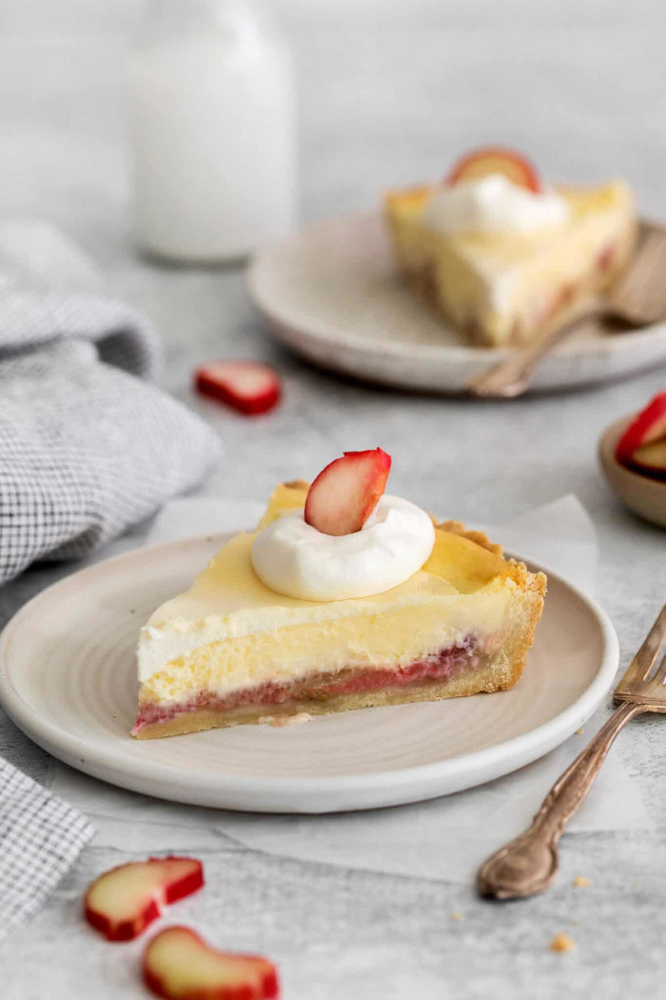

Mini Cheessecakes
These Mini Cheesecakes feature an easy pressed-in crust that tastes like a buttery shortbread cookie. It’s filled with layers of sweet-tart rhubarb
and creamy cheesecake, and a thin topping of sweetened sour cream. Absolutely delightful!

It’s a pie. It’s a cheesecake. Hello, my friends – it’s Rhubarb Cheesecake Pie!
This incredible rhubarb pie recipe is my own riff on a local restaurant‘s “Rhubarb Delight” pie that our whole family loves. It features an easy pressed-in crust
that tastes like a buttery shortbread cookie (so good!!) – and filled with layers of sweet-tart rhubarb and creamy homemade cheesecake, then topped with a thin
spread of sweetened sour cream.
I hope you enjoy this delightful pie as much as our family does!
WHAT YOU'LL NEED
This pie has an easy-to-make pressed-in crust that’s filled with 3 distinct layers of deliciousness. As you can see, even with the four different portions, there
are still very few ingredients involved!
CRUST:
- ⅓ cup graham cracker crumbs
- 1 tablespoon white sugar
- 1 tablespoon margarine, melted
FILLING:
- 1 (8 ounce) package cream cheese, softened
- ¼ cup white sugar
- 1 ½ teaspoons lemon juice
- ½ teaspoon grated lemon zest
- ¼ teaspoon vanilla extract
- 1 egg
HOW TO MAKE THIS MINI CHEESECAKES
Let’s break it down, layer by layer. It’s easy, I promise!
- Preheat oven to 325 degrees F (165 degrees C). Grease a 6-cup muffin pan.
- In a medium bowl, mix together the graham cracker crumbs, sugar, and margarine with a fork until combined. Measure a rounded tablespoon of the mixture into the
bottom of each muffin cup, pressing firmly. Bake in the pre-heated oven for 5 minutes, then remove to cool. Keep the oven on.
- Beat together the cream cheese, sugar, lemon juice, lemon zest and vanilla until fluffy. Mix in the egg.
- Pour the cream cheese mixture into the muffin cups, filling each until 3/4 full. Bake at 325 degrees F (165 degrees C) for 25 minutes. Cool completely in pan
before removing. Refrigerate until ready to serve.
Enjoy!